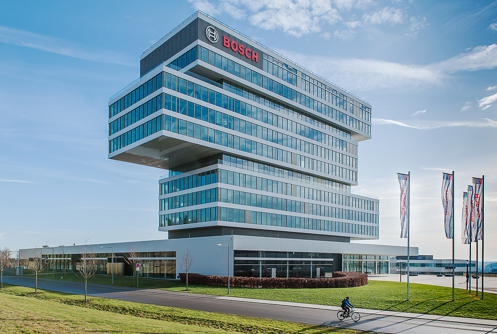

CarbyneStackCon '23¶
CarbyneStackCon '23 is over. Stay tuned for CarbyneStackCon '24!

The Carbyne Stack Conference (or CarbyneStackCon) is the annual meetup of the Carbyne Stack Open Source Community. It is designed to foster collaboration, discussion and knowledge sharing within the Carbyne Stack community.
Registration¶
CarbyneStackCon '23 (CSC23) is an open event sponsored by Bosch Research taking place on November 30th. Everyone interested is welcome to attend! However, seats for in-person participation are limited and registration is required for both in-person and virtual attendance in order to facilitate our planning.
Registration closed
Registration is closed since November 24, 2023 (CET).
Program¶
We have put together an exciting and fun program for CarbyneStackCon '23. It's an attractive mix of talks from industry, academia, developers, and a fair amount of time for networking, discussions, and having fun. Note that all times are Central European Time (CET).
This year we will also have workshops the day after CarbyneStackCon to discuss technical topics around Carbyne Stack in more depth.
Conference Day (Nov 30)¶
Talk Details¶
8:30 am
Registration
9:30 am
Opening
9:45 am Keynote
Carbyne Stack - Towards an Ecosystem for Open Cloud-Native Secure Multiparty Computation
Dr. Sven Trieflinger (Senior Project Manager at Bosch Research, Carbyne Stack Maintainer)
Sven is a Senior Project Manager, Group Manager, Research Engineer, and open source software maintainer at Bosch Research. He has over 15 years of experience in the design, architecture, and implementation of distributed systems and cloud platforms. With his team at Bosch, Sven drives innovation in the area of privacy-preserving computing technologies and is spearheading open source computing on encrypted data technology with the Carbyne Stack cloud-native Secure Multiparty Computation platform.
Abstract
Carbyne Stack is envisioned as a cloud-native operating system for MPC workloads, managing resources to make them run as efficiently as possible in real-world multi-cloud deployments. From a business perspective, it's the seed for an upcoming open ecosystem of technology building blocks that will accelerate the development and adoption of MPC technology across industries. This talk will cover various aspects of this vision and review how far the Carbyne Stack community has come towards making the vision a reality.
10:15 am Technical Talk
Deploying Carbyne Stack using Infrastructure as Code
Jared Weinfurtner (Software Consultant/Engineer, Bosch Digital)
Jared is a Software Consultant & Engineer at Bosch with over 15 years of experience. He is a part of the Innovation Execution department at Bosch Digital, focusing on building better developer experiences in the areas of Web3 and Privacy-Preserving Computing Technologies. He has been an active contributor to Carbyne Stack for almost 2 years.
Abstract
We set out to make deploying Carbyne Stack as simple as running a single script to launch an entire infrastructure on every major cloud, including on your local machine. Infrastructure as Code (IaC) transforms the deployment experience by shifting from manual infrastructure management to code-driven automation. Cloud Development Kit for Terraform (CDKTF) takes this evolution further, offering developers an intuitive and familiar programming language interface to define infrastructure.
10:30 am
Coffee break
10:45 am Industry Talk
Real-World Challenges in Deploying Distributed Encrypted Learning
Katharine Jarmul (Privacy activist and data scientist)
Katharine is a privacy activist and data scientist whose work and research focuses on privacy and security in data science workflows. She is author of Practical Data Privacy (O'Reilly 2023) and has held numerous leadership and independent contributor roles at large companies and startups in the US and Germany — implementing data processing and machine learning systems with privacy and security built in and developing forward-looking, privacy-first data strategy. She is a passionate and internationally recognized data scientist, programmer, and lecturer.
Abstract
In this talk, I'll share some real world challenges faced in deploying multi-party-computation in machine learning (from time at Dropout Labs working on tf-encrypted and Moose). Some of these challenges are likely familiar to the audience or users of Carbyne Stack, including:
- Authorization and Identity Services in a Multi-Trust Environment
- Data Preprocessing
- Safe Debugging
- Computation Auditing
- Brokering Trust across Data Partners
I'll be sharing my personal opinion on these challenges as well as some potential suggestions for future exploration.
11:30 am Technical Talk
Stacking Stacks: A Case Study on running Carbyne Stack on Constellation
Otto Bittner (Security Software Engineer, Edgeless Systems GmbH)
Otto is a Security Software Engineer with Edgeless Systems and works on making Confidential Computing more user friendly. Part of that work is implementing remote attestation flows, benchmarking Kubernetes cluster performance and dealing with pesky Heisenbugs.
Abstract
Carbyne Stack promises to bring multi-party computation into the cloud-native world. Constellation promises to bring the security of on-prem data centers into the cloud. This session will show that both projects make good on their promises and how different privacy enhancing technologies can be stacked. We will learn about the guarantees Constellation provides, and how easy it is to deploy Carbyne Stack on a production cluster.
12:00 am
Lunch break
1:00 pm Industry Talk
Integrating Sharemind MPC into Carbyne Stack
Riivo Talviste (Product Owner Sharemind, Cybernetica)
Riivo has been part of the Sharemind team since 2009. His main responsibilities have been practical deployments and also various Sharemind MPC integration projects. Now, Riivo is overseeing Sharemind MPC development as a product owner.
Abstract
Sharemind MPC is a multi-party computation framework that was started in 2007. It supports MPC schemes with different number of parties and adversary models and is focused on practicality by creating the SecreC programming language so non-cryptographers can write MPC programs. Recently, we decided to integrate Sharemind's machine-optimized protocols into Carbyne Stack. In the talk, we'll go over the current feature set of Sharemind MPC, why we decided to go with the integration route and the integration roadmap.
1:45 pm Technical Talk
Kubernetes-native Correlated Randomness Generation with Klyshko
Dr. Sven Trieflinger (Senior Project Manager at Bosch Research, Carbyne Stack Maintainer)
Sven is a Senior Project Manager, Group Manager, Research Engineer, and open source software maintainer at Bosch Research. He has over 15 years of experience in the design, architecture, and implementation of distributed systems and cloud platforms. With his team at Bosch, Sven drives innovation in the area of privacy-preserving computing technologies and is spearheading open source computing on encrypted data technology with the Carbyne Stack cloud-native Secure Multiparty Computation platform.
Abstract
State-of-the-art MPC protocols consist of two phases: An input-independent offline phase, which uses heavyweight cryptographic tools to generate so-called cryptographic randomness in advance, which is consumed later during an online phase, where the actual function is computed very efficiently using only lightweight operations. This talk will cover how Carbyne Stack implements the offline phase in a scalable, extensible, and Kubernetes-native way by relying on the well-known Kubernetes Operator pattern.
2:00 pm Research Talk
Recent Advances in Secure Two-Party Computation
Prof. Dr-Ing. Thomas Schneider (Technical University of Darmstadt)
Thomas Schneider is full professor for Cryptography and Privacy Engineering in the Department of Computer Science at Technical University of Darmstadt, Germany. Before, he was independent research group leader at TU Darmstadt (2012-2018), did a PhD in IT Security at Ruhr-University Bochum (2008-2011), and wrote his Master thesis during a research internship at Alcatel-Lucent Bell Labs, NJ, USA (2007). His research focuses on privacy, cryptographic protocols, applied cryptography, and computer security. He heads the Cryptography and Privacy Engineering Group (ENCRYPTO), whose mission is to demonstrate that privacy can be efficiently protected in real-world applications. For this, his group combines applied cryptography and algorithm engineering to develop cryptographic protocols and tools for protecting sensitive data and algorithms. For his research on cryptography and privacy engineering, he was awarded in 2019 with an ERC Starting Grant, the highest profile individual project funding in Europe.
Abstract
Secure two-party computation allows two parties to securely compute a function on their respective private inputs. It allows to preserve privacy in applications that involve a client and a single server. In this talk, I will give an overview on recent advances in the area of secure two-party computation. In particular, I will focus on the setting with semi-honest parties, which allows to construct the most efficient protocols. I will summarize two recent research results from the ENCRYPTO group: ABY2.0 (USENIX Security’21) allows highly efficient secure evaluation of Boolean circuits with multi-input AND gates and vector products, and FLUTE (IEEE S&P’23) extends these results to multi-input lookup tables. Among many other applications, these protocols substantially improve efficiency of privacy-preserving machine learning.
2:30 pm
Coffee break
2:45 pm Technical Talk
Continuous Load Testing using Caliper
Julian Grewe (Working Student, Bosch Research)
Julian is pursuing his Master's degree in Business Informatics at the University of Stuttgart. Prior to joining the Carbyne Stack team, he worked on multiple DevOps projects focusing on building and releasing microservices in the automotive domain.
Abstract
Load testing is an integral part of the software development lifecycle, allowing for the evaluation of system performance under stress in a controlled environment. Caliper is our custom-tailored Load-Testing-as-Code (LTaC) tool based on Gatling, developed to test Carbyne Stack's robustness and enable continuous performance validation. This talk will cover how Caliper is used to assess the effectiveness of a Carbyne Stack VPC deployment by allowing scenario testing that mirrors actual operational loads, as well as Caliper's integration into an automated testing process, to match the continuous evolution of the Carbyne Stack platform.
3:00 pm Industry Talk
Secure and Private Collaborative Learning
Dr. Jonas Böhler (Security Researcher, SAP Security Research)
Jonas Böhler is a senior researcher at SAP security research. He received his PhD from the Karlsruhe Institute of Technology (KIT) and his thesis received awards from ERCIM Security and Trust Management Working Group and the KIT faculty of computer science. His research interests are privacy-enhancing technologies such as secure computation and data anonymization with applications for cross-company collaborations.
Abstract
Secure multi-party computation (MPC) is the technological enabler to protect data in use and unlock enterprise collaborations on confidential data. In the EU project Glaciation, MPC is key for SAP Security Research to ensure privacy-preserving data operations across the edge-to-cloud continuum. Here, Carbyne Stack is the cloud-native MPC solution to deploy, scale, and evaluate our research efforts and realize our use case. Specifically, we investigate how to augment MPC (to protect inputs) with differential privacy (to limit inference from outputs) in the context of collaborative machine learning across companies. Join us in this talk, to hear about the intersection of secure computation, differential privacy, and the technological foundation and enabler that is Carbyne Stack.
3:30 pm Technical Talk
Privacy-Preserving Federated Learning with Nettle
Sebastian Becker (Research Engineer, Bosch Research)
Sebastian is a Research Engineer at Robert Bosch GmbH. His work focuses on making privacy-enhancing technologies easily adaptable to the needs of the wide range of application domains at Bosch. In this context, Sebastian also works as one of the maintainers of and main contributors to Carbyne Stack.
Abstract
With speed, cost, and privacy advantages, federated learning is emerging as an alternative to centralized ML approaches. However, without additional safeguards, federated learning won't live up to its promise, as it is vulnerable to privacy attacks and model theft. Our open-source Flower extension for privacy-preserving federated learning called Nettle fills this gap by deploying additional layers of defense. By integrating with our open-source Carbyne Stack Secure Multiparty Computation (MPC) platform, Nettle can effectively protect against privacy attacks via MPC-based Secure Aggregation. In addition, Nettle deploys Confidential Computing to protect valuable ML models from unauthorized model extraction on the client. In this talk, we describe the concepts behind Nettle, which are based on the idea of splitting the role of the Flower server into the three distinct roles of model owner, orchestrator, and aggregator. We show how we leveraged Flower's extensibility mechanisms to enable straightforward integration with the Carbyne Stack MPC services providing a scalable backend for Secure Aggregation. We describe how Confidential Computing enclaves and remote attestation are used in Nettle to ensure that the model owner retains full control over the ML model throughout the whole distributed learning process. Finally, we give a preview on what is to come for Nettle in the future.
3:45 pm
Coffee break
4:00 pm Technical Talk
Building Cross-Language Carbyne Stack Clients Using WebAssembly
Jared Weinfurtner (Software Consultant/Engineer, Bosch Digital), Nicolai Huening (Working Student, SAP Research)
Jared is a Software Consultant & Engineer at Bosch with over 15 years of experience. He is a part of the Innovation Execution department at Bosch Digital, focusing on building better developer experiences in the areas of Web3 and Privacy-Preserving Computing Technologies. He has been an active contributor to Carbyne Stack for almost 2 years.
Nicolai Hüning is a master student at the Karlsruhe Institut of Technologie (KIT) and has been a working student for SAP since 2021. He started in the CoreDNS team on cloud deployments and DNS management tools. On January 2023 he transitioned to the SAP security research team evaluating and working on deployment options for Carbyne Stack on SAP Business Technology Platform (BTP). Additionally, since October 2023, Nicolai has been actively involved in the development of the WASI Carbyne Stack client, elmer.
Abstract
With the recent advancements in WebAssembly, specifically the WebAssembly System Interface (WASI), we set out to build cross-language Carbyne Stack clients utilizing Rust as the primary programming language and compiling into WebAssembly (Wasm). The objective is to create a universal client framework that seamlessly integrates with various programming languages supporting WebAssembly through automated build and release processes. This will allow use cases to be built rapidly without needing glue code.
4:15 pm Industry Talk
Legal and Policy Dimensions of Secure Multiparty Computation in Privacy, Open Source and Responsible AI
Katharina Koerner, PhD (Responsible AI Advisor at Tech Diplomacy Network and Corporate Development Manager at Daiki)
Katharina Koerner is a multifaceted professional with senior management experience, legal acumen, and technical proficiency, focused on tech policy, privacy, security, AI regulation, and the operationalization of responsible AI. Katharina is actively engaged with the Tech Diplomacy Network in Silicon Valley, founded to promote collaboration and dialogue between diplomats, civil society, and the tech industry. In her role as Corporate Development Manager at a forward-thinking seed-stage startup dedicated to AI strategy and governance, Katharina spearheads strategic initiatives to drive innovation and foster growth. Her latest endeavor is founding the AI Education Network, a dedicated group of professionals who are passionate about equipping K-12 students with AI literacy. Katharina holds a PhD in EU Law and various certifications in information security, privacy, privacy engineering, and AI/ML.
Abstract
This presentation will delve into legal perspectives and policy developments relevant to Open Source Secure Multiparty Computation. It aims to provide a comprehensive overview of the significance of Privacy-Enhancing Technologies (PETs) and Secure Multiparty Computation (SMPC) within the broader context of privacy, security, and AI regulation. Participants will gain valuable insights into global policies and initiatives that advocate for the adoption of PETs. Furthermore, it will shed light on the anticipated implications of the forthcoming EU AI Act on Open Source Secure Multiparty Computation. Additionally, it will underscore the critical role of privacy-preserving machine learning in ensuring the responsible use of AI.
5:00 pm Technical Talk
Carbyne Stack for Human Input
Jared Weinfurtner (Software Consultant/Engineer, Bosch Digital), Renas Barış Özkal (Smart Start Software Engineer, Bosch Turkey)
Jared is a Software Consultant & Engineer at Bosch with over 15 years of experience. He is a part of the Innovation Execution department at Bosch Digital, focusing on building better developer experiences in the areas of Web3 and Privacy-Preserving Computing Technologies. He has been an active contributor to Carbyne Stack for almost 2 years.
Baris is a senior computer engineering student at TED University. He is a JavaScript enthusiast who loves to learn new stuff and to contribute to open source software as much as he can. Besides his studies, he is a software engineer developing web applications for Bosch Manufacturing Solutions.
Abstract
Currently, Carbyne Stack use cases revolve around B2B with organizations providing secrets from databases and machines. To open use cases involving human input, we set out to build a browser extension to perform the secret sharing on captured human input. This approach empowers any web application to solicit secret input from a human without necessitating trust in the web application itself — instead, trust is placed solely in the extension.
5:15 pm
Closing
from 6:30 pm
Dinner
Workshop Day (Dec 1)¶
| Time | Title |
|---|---|
| 9:30 am | Cloud-Native Authentication and Authorization for MPC Systems |
| 11:30 am | Lunch Break |
| 12:30 am | Deploying and Operating MPC Systems |
| 2:30 pm | Closing |
Workshop Details¶
9:30 am
Workshop I: Cloud-Native Authentication and Authorization for MPC Systems
Abstract
Bosch Research is currently implementing an authentication system for Carbyne Stack and is working on a proposal to add a flexible authorization layer to Carbyne Stack that specifically takes into account the decentralized and distributed nature of MPC systems. In this workshop, the current state of these initiatives and the way forward will be discussed.
11:30 am
Lunch break
12:30 pm
Workshop II: Deploying and Operating MPC Systems
Abstract
In recent years, milestones in the efficiency of MPC protocols have paved the way for the use of MPC in a wide range of applications. However, putting real-world MPC systems into operation is something that has not been the focus of research. It consists of several not-so-easy tasks, including finding the right set of MPC computing parties, deploying the system on heterogeneous infrastructure, and coordinating day-2 operations across administrative boundaries. In this workshop we want to collect and discuss things that make using MPC in the real world a challenging task and ideate on how Carbyne Stack could help solve them.
2:30 pm
Closing
Venue Information¶
-
Bosch Research Campus


Address
Robert-Bosch-Campus 1
71272 Renningen
Getting There¶
The Bosch Research Campus is located near Stuttgart. See our travel information sheet for information on how to get to the Reseach Campus by car or public transport.
Accommodation¶
There are numerous hotels in and around Renningen. One that is in walking distance to the venue is
Hotel Campo
Raitestraße 26
71272 Renningen
+49 7159 939800
info@campo-renningen.de
Catering¶
Food and beverages will be complementary.